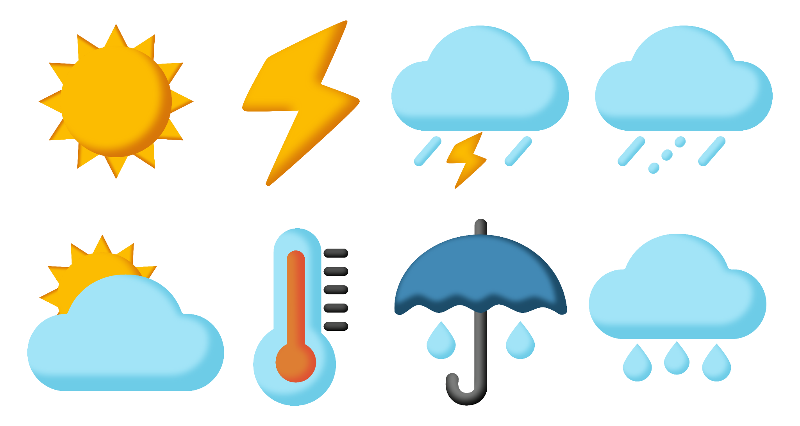

Explore real Oregon climate records
Tracking Climate Data
Explore annual temperature, annual precipitation, and seasonal rainfall patterns in Corvallis—and consider what the differences mean for gardeners.
About 7–10 minutes, including the demonstration video.

Investigation 1 · Temperature
Is Corvallis getting warmer?
Explore long-term average annual temperature at the Corvallis State University weather station.
Watch: Exploring climate data in xmACIS
Watch the demonstration, then use the directions below to explore the temperature and precipitation records yourself.
Open the climate data tool
Open xmACIS in a new tab and select Corvallis State University under Station Selection.
Graph annual temperature
Choose Single-Station → Seasonal Time Series, Average Temperature, and Annual. Under More Options, select Add Regression Line before you generate the graph. Then select Generate Graph.
Look at the overall direction of the trend line, not individual years.
What is the long-term pattern in average annual temperature?
Investigation 2 · Annual precipitation
Has annual precipitation changed?
Keep the same Corvallis station and the Annual time period. Switch the climate variable to Precipitation. Under More Options, select Add Regression Line before choosing Generate Graph.
Notice how much individual years vary. Compare the overall trend line with the one you saw for temperature.
What is the overall long-term pattern in annual precipitation?
Investigation 3 · Seasonal precipitation
Does the annual total tell the whole story?
Keep Precipitation selected. Change the time period from Annual to Winter, Spring, Summer, and Fall, using More Options → Add Regression Line before generating each graph. Compare the direction of the trend lines.
Compare the seasonal trend lines with one another and with the annual precipitation graph. Seasonal patterns may differ, even when the annual total has little overall trend.
Which season does not show the increasing precipitation trend seen in the other three seasons?
Activity complete
You’ve explored the climate data!
The Corvallis data show that temperatures have increased over time, while precipitation patterns vary by season. Annual precipitation totals alone don’t tell us the whole story.
Continue to the next Canvas page, What Do These Trends Mean for Your Garden?, to connect the data to snowpack, seasonal water availability, and plant needs.
These trends describe the station and time periods explored here; other Oregon locations may differ.
Activity complete. Use Canvas’s Next button outside this activity to continue.